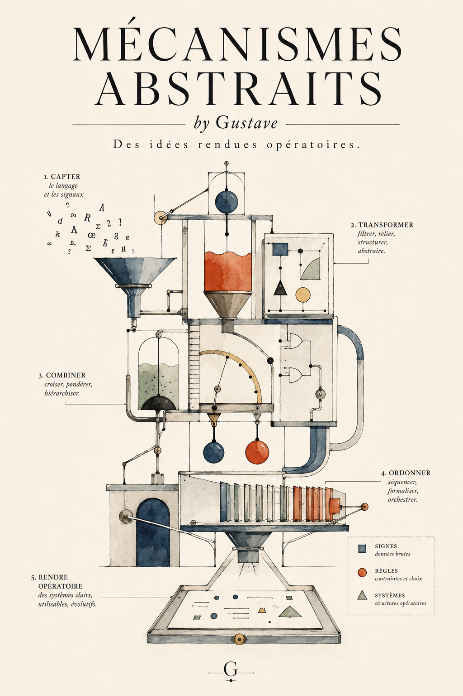

GF Wordbench
An implemented toolchain for GF language inspection, native GF execution, diagnostics, scenario comparison and release evidence.
Explore →I build systems where language, rules, and software engineering meet — from serious grammatical infrastructure to experimentally verified low-level code.
Under Mécanismes Abstraits, my work combines computational linguistics, product architecture and human-directed AI development. The goal is not merely generated code. It is a working system, with traceable decisions and observable results.

The principal work is the construction, validation and governance of multilingual grammatical systems. The underlying sources, tools and test infrastructure are substantial; maturity is described at the level that the evidence supports.
An implemented toolchain for GF language inspection, native GF execution, diagnostics, scenario comparison and release evidence.
Explore →Extensive grammar, morphology and syntax sources, source-level parity work and a layered certification campaign.
Explore →An independent source-grounded engineering reference for language development, architecture and review.
Explore →In a separate field — RISC-V Vector JSON parsing — the same human-directed process moved from hypotheses and compiler builds to repeatable native measurements.
Test 106 compared the frozen VectorPath A2 configuration to the official simdjson 5.0.4 fallback backend on 18 pinned public JSON documents. The comparison is specific; it is not a claim to beat every SIMD backend or workload.
Whether the subject is a grammar, a release pipeline or a vectorized parser, I organize development through a few explicit moves.
Understand the problem, the constraints and the underlying domain.
Turn ambiguity into contracts, models, language and architecture.
Use modern tools, including AI, to implement and explore alternatives.
Test actual behavior, keep negative results and document the boundary of the proof.
Wordbench establishes what has been tested for a given language. Ars Magna is designed to juxtapose those language records, and Observatory to make them legible without silently altering their conclusions.
The Compendium stands independently: a reference for building and evaluating GF/RGL languages, not an autonomous generator.
The wider aggregation and publication architecture is documented and under development, not claimed as a fully operational multilingual deployment.
↗ Independent reference: GF RGL AI Compendium
My research asks what becomes possible when a person can direct powerful implementation tools through goals, interfaces, test suites and evidence rather than personally writing every line.
This is a position about a shifting abstraction boundary, not a claim that Java, Python or systems expertise have already disappeared. It favors higher-level specification and accountability for what executes.
Torvalds’s point was about understanding and responsibility, not banning AI tools.
Torvalds rejected blanket bans on AI tools while emphasizing the developer’s responsibility to understand the resulting code. He did not declare programming languages obsolete.
Source, tests, measured outcomes and limitations live with the projects that produce them.